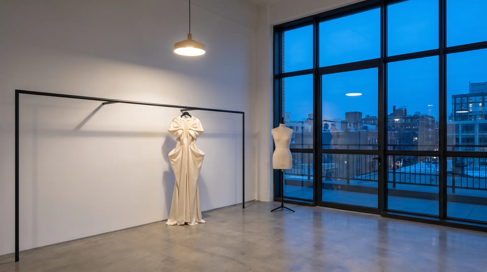

The atelier
I work alone, and I make
one garment at a time.
I work alone, and I make one garment at a time.
A piece begins with a conversation and a set of measurements. From those I cut a toile — a full version of the garment in plain cotton, made to be marked, taken apart and cut again. It is the least glamorous stage and the one that decides everything: how a shoulder sits, where a seam wants to fall, how much room a body needs to move.
Only when the toile is right do I cut the cloth. Then come the fittings — three for a couture piece, and more for a wedding dress. A garment is finished when it stops asking for anything.
Nothing is made twice. There is no stock, no rail of sizes, no shop. Each pattern belongs to one person and is kept, so that if they come back we start from a shape that already fits.
Most of what I make is for women. But a pattern is drawn from a body, not a category, and I make for men as well.
I take on a small number of commissions at a time. It is the only way to work like this, and it is why my first question is always when you need the piece.
From the first conversation to the finished piece takes one to six months, depending on the model, the design and the cloth.
Currently Amsterdam, but online meetings welcome. Consultations and fittings are by appointment only.
Alexandra Scillasdotter
If that is how you would like to work, say hello.
By appointment only · Currently Amsterdam · Online meetings welcome